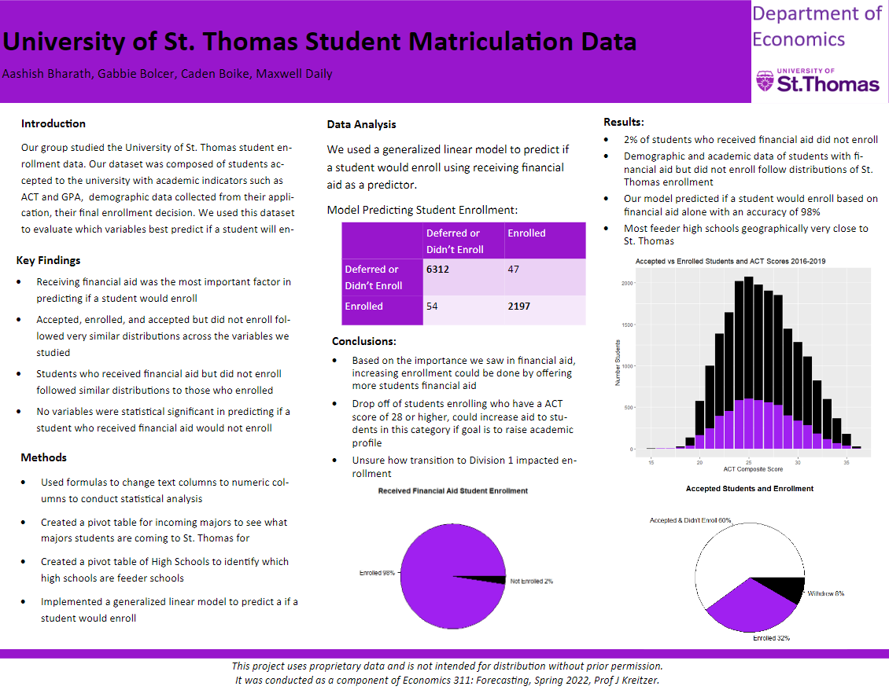
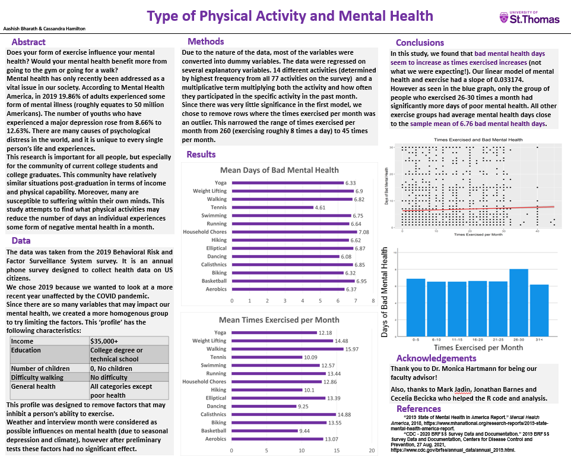

During the summer of 2022 I was lucky enough to get an Internship at Trane Technologies, a global HVAC company.I worked on a machine learning model to
imporve copper price predictions for the Global Procurement Department. I headed the project by reseraching, cleaning, and adding new data to a pre-exisitng dataset to see if the new data will help improve the predictionsThis project was
intended to be a learning expirence for me to get my feet wet in everything that a full time Data Scientist would have to do. I was able to learn a great
deal about Python, Pandas, Numpy,Data Cleaning, Numerous Statistical Libraries within Python, and plenty more. At the end of the 3 months,
I was not able to improve the predictions for copper. This was difficult for me, however it was a valuable lesson. Data science does not always
pan out, and you just have to continue trying new things. Despite that, I was able to create an automated tool for my team to use in the future
that can test any new variable into the copper prediciton model.
I was able to do this project during the spring semester of 2022. This was our final project in my Forecasting class.
The data we were working with was University of St. Thomas Student Matriculation Data from the past 6 years given to us
by the UST Admissions office. Our objective was to find what key variables indicate whether or not a student will enroll at
UST. My group and I were able to create a generalized linear model to predict student enrollment with an accuracy of 98%.

This was a partner research project competetion that I participated in through the UST Economics Department.
Our objective was to use CDC Survey Data and conduct some sort of research by asking and answering a question.
The question we decided to ask was "How does the Type of Physical Activity affect Mental Health." Our results indicated
that there is no correlation between the type of activity done and Mental Health. This was a tremendous leearning expirence
as we ran into many issues throughout our research. One major lesson learned was that data at every step of the process matters.
In this project, the survey questions were very vague and amigious which most likely led to issues while we tested the data.
Overall, this was a great project and one of my first real Data Analytics expirences.
